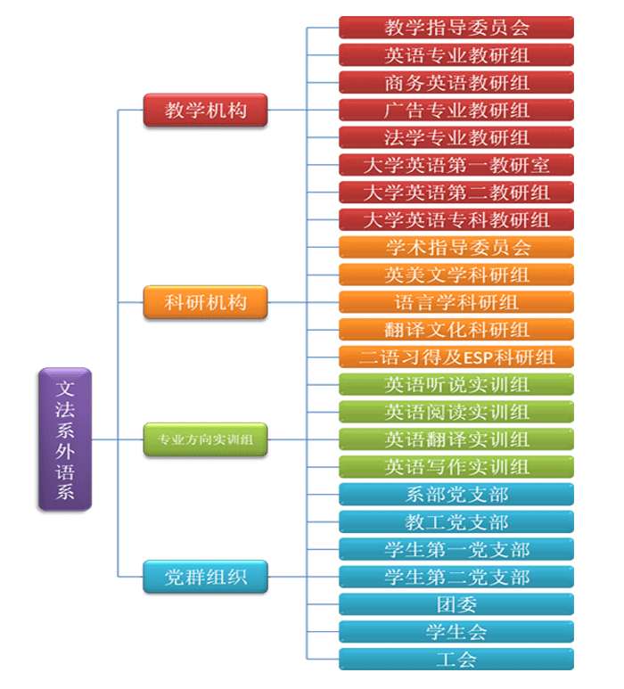

系部首页
系部概况
系部简介
专业介绍
组织架构
师资队伍
系大事件
教学工作
教学改革
专业建设
精品课程
实践竞赛
科研工作
科研信息
科研讲座
学术团队
科研成果
党建团学
党建信息
党员组织
团学信息
团学组织
五项工程
思想品德提升工程
书香校园工程
写作与口才训练工程
身心素质训练工程
社会实践工程
学生就业
就业信息
优秀毕业生
就业技巧
资料下载
行政工会
系部动态
规章制度
工会之家
学院首页
系部简介
专业介绍
组织架构
系部管理
师资队伍
系大事件
